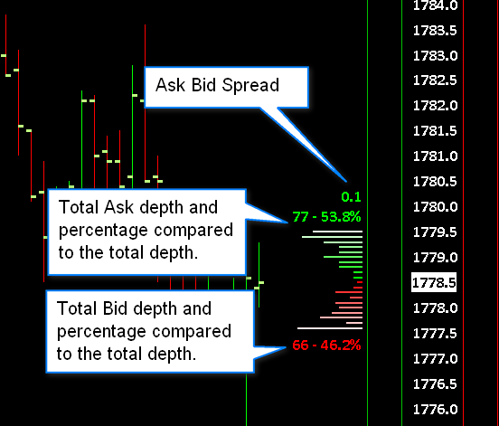

Trade Menu
- Trade Simulation Mode On
- Trading Locked
- Open Trade Window for Chart
- Attach Trade Window To Chart Window
- Chart Trade Mode On
- Trading Chart DOM On
- Show Order Fills
- Show Orders And Position
- Only Orders From Chart
- Show Market Data Columns
- Draw DOM Graph on Chart
- Re-Center Trade DOM Scales
- Clear Recent Bid/Ask Volume
- Clear Current Traded Bid/Ask Volume
- Clear Recent Bid/Ask Volume - All Symbols
- Clear Current Traded Bid/Ask Volume - All Symbols
- Trade Orders Window
- Trade Positions Window
- Account Balances Window
- Trade Service Log
- Refresh Trade Data From Service
- Trade Activity Log
- General Trade Settings
- Chart Trade Settings
- Chart DOM Settings
- Customize Chart/Trade DOM Columns
- Clear Trade Simulation Orders & Data
- AutoTrade System Bar Based Backtest
- AutoTrade System Bar Based Backtest with Scan
- AutoTrade System Replay Backtest
- Trading Keyboard Shortcuts Enabled
- Auto Trading Enabled - Global
- Auto Trading Enabled - Chart
- Disable Auto Trading On Startup
- Goto Next Chart Fill
- Goto Previous Chart Fill
Trade Simulation Mode On (Trade menu)
When this menu item is checked/enabled, then Trade Simulation Mode is globally enabled.
This is a global state. All submitted orders, order modifications and order cancellations will be simulated when Trade Simulation Mode is enabled.
When Trade Simulation Mode is enabled, the Trade Account setting on the Trade Window for charts is set to a simulated account (Sim#).
However, in newer versions the Trade Window does list and support selecting non-simulated accounts as well to allow the replaying of non-simulated order fill activity.
When a chart is replaying it is not possible to disable Trade Simulation Mode. The checkmark cannot be removed and an error message is added to the Trade >> Trade Service Log about this (Cannot disable Trade Simulation Mode while a chart is replaying.). Therefore, it is necessary first to stop replaying all of the charts before you can disable Trade Simulation Mode.
With some supported Trading services, like Trading Evaluator, it is not possible to enable Trade Simulation Mode unless a chart is replaying.
Trading Locked (Trade menu)
When Trading Locked is enabled, has a checkmark beside it, then this means that order submissions, order modifications and order cancellations from anywhere within Sierra Chart, including the DTC Server are blocked and will give an error message in the Trade >> Trade Service Log.
When Trading Locked is disabled, then none of this applies.
You can also add a Control Bar button for Trading Locked so that you can quickly enable and disable it through a button.
Trading can also be locked by the Global Profit/Loss Management functionality. To disable it, refer Lock Trading to the setting. When trading is locked by Global Profit/Loss Management, the Trade >> Trading Locked menu command will not be checked. Although trading will still be locked in the background.
Open Trade Window for Chart (Trade menu)
Opens the Trade Window for the active chart.
Attach Trade Window To Chart Window (Trade menu)
Attaches the Trade Window for the active chart to the chart window. It can be attached to the left or right side. By default it is attached to the left side. To move it to the right side, select Chart >> Chart Settings >> Trading and enable Attach Trade Window to Right Side.
Chart Trade Mode On (Trade menu)
When this menu item is checked/enabled, then Chart Trade Mode for the active chart is enabled.
This means that order entry, modification, and cancellation is supported directly from the chart itself.
This menu command applies for the active chart. It is not global.
If you want to just display orders on the chart but not be able to modify or cancel them, then disable Trade >> Chart Trade Mode On and instead enable Trade >> Show Orders and Position.
Control Bar buttons can be set up for each of these commands.
In the case of a simulated order when Trade >> Trade Simulation Mode On is enabled, it is necessary that either Trade >> Chart Trade Mode On or Trade >> Show Orders and Position is enabled. Otherwise, the order will not fill. This is explained in the Orders Do Not Fill When Expected section.
Trading Chart DOM On (Trade menu)
When the Trading Chart DOM On menu item is checked/enabled, then the Chart DOM is displayed and functional for the active chart.
The Chart DOM allows you to enter orders using a price ladder style interface, that is directly integrated into the chart.
This option is always enabled for a dedicated Trading DOM window.
The Chart DOM can be customized to display market data columns and the order of all of the columns can be changed. For instructions, refer to Customize Chart/Trade DOM Columns.
Show Order Fills (Trade menu)
When this menu command is checked, then Order Fills will be displayed on the chart. Order Fills are displayed as small boxes on the chart indicating the Quantity and Price of the fill and other fill data along with a corresponding arrow at the price level of the fill. This command applies to the active chart. The data that is displayed can be customized. For complete documentation, refer to Displaying Order Fills on the Chart documentation.
Show Orders And Position (Trade menu)
When this menu item is checked, then working orders for the Symbol and Trade Account of the chart will be displayed on the chart. The Trade Position line will be displayed on the chart as well. Although it may not be visible if the Position Average Price is not known or its Average Price is outside of the range of prices currently displayed on the chart.
For additional information, refer to the Chart Trading documentation.
This option is always set to be on when Trade >> Chart Trade Mode On is enabled. Therefore, to actually uncheck Show Orders And Position it is first necessary that Trade >> Chart Trade Mode On be unchecked.
Also make sure that Trade >> Only Orders from Chart is disabled to see orders from other charts and Trading DOMs.
To see child Attached Orders on the chart, it is also necessary to disable/uncheck Menu >> Settings >> Hide Pending Attached Orders through the Trade Window menu.
In the case of a simulated order when Trade >> Trade Simulation Mode On is enabled, it is necessary that either Trade >> Chart Trade Mode On or Trade >> Show Orders and Position is enabled. Otherwise, the order will not fill. This is explained in the Orders Do Not Fill When Expected section.
Only Orders From Chart (Trade menu)
When this menu item is checked, then only orders which originated from the chart or Trade DOM will be displayed. Otherwise, any order from any other chart or Trade DOM that matches the Symbol and Trade Account will also be displayed.
Show Market Data Columns (Trade menu)
When this menu command is checked, the configured Chart/Trade DOM columns will be displayed on the Values Scale area on the right side of the chart. However, order entry is not possible unless Trade >> Trading Chart DOM On is also enabled.
To configure the columns, refer to Customize Chart/Trade DOM Columns.
If Trade >> Trading Chart DOM On is disabled, then the buy and sell order entry columns will not be displayed.
When the Trade >> Trading Chart DOM On is enabled, the Show Market Data Columns menu command will be disabled since the market data columns will be displayed in that case.
Additional Steps
- The Bid Size and Ask Size columns need to be added to the Chart DOM to see the market depth sizes/quantities in the Values Scale. Otherwise, they will not display. To add these columns, select Trade >> Customize Chart/Trade DOM Columns. There are various configurations available for the Bid Size and Ask Size columns. It is recommended to add the Combined Bid/Ask Size-Centered column for this purpose.
- There needs to be market depth data available from the Data or Trading service you are using to see the market depth sizes/quantities. For additional information, refer to Open Market Depth Window.
- You may want to use the Constant Range Scale Range type and expand the scale vertically, in order to see all of the available Bid and Ask sizes without overlapping. For more information, refer to the Chart Scale and Scale Adjusting documentation page.
Draw DOM Graph on Chart (Trade menu)
{kind=link}
When the Trade >> Draw DOM Graph on Chart menu command is checked, then a graph of the depth of market (DOM) quantities for all of the available Bid and Ask levels will be drawn on the right side of the chart. This option is specific to each individual chart and applies to the active chart window.
To be able to see the DOM Graph for a particular symbol, there are several conditions which need to be true. The Data or Trading service you are using with Sierra Chart must provide market depth data for the symbol of the chart.
Check with the service you are using to see if this data is available. There needs to be a connection to the data feed ( File >> Connect to Data Feed ). The market for the symbol needs to be open and trading. If these conditions are not true, there will not be a visible graph. Or only a single level of depth will be visible.
By default you will see the total quantities for all of the Ask prices and the total quantities for all of the Bid prices displayed along with the percentages that these are of the total of all of the market depth quantities.
Settings to control the display of this graph are found in Chart >> Chart Settings >> Market Depth >> DOM Graph.
{kind=link}
The settings are documented below.
- Draw DOM Graph on Chart: When this option is enabled, the Depth of Market graph is displayed on the right side of the chart.
- Show Volume Numbers: When this option is enabled, each line of the Depth of Market graph will have the volume for that line displayed as text beside it. If the volume lines are all close together, then this option is not going to be useful because it will be hard to read the volume numbers.
- Only Levels with Greatest Volume: When this option is enabled, only the Bid and Ask levels that have the greatest volume will have lines displayed for them.
- Show Volume Totals and Percentages: When this option is enabled, then the total of the depth volumes and the percentages, are calculated for the bid side and the ask side and displayed.
- Show Spread: When this option is enabled, the difference between the best ask price and the best bid price is calculated and displayed on the DOM Graph.
- Show Bid and Ask Prices: When this option is enabled, the Ask and Bid prices are displayed at the top and bottom of the DOM Graph respectively.
- Width in Bars: This sets the width of the DOM Graph based upon the specified number of chart bars.
The DOM graph is drawn on the right side of the chart. The chart bars will overlay this graph. What you need to do to prevent this is first make certain there is no checkmark by Chart >> Lock Fill Space. Scroll the chart toward the left using the scrollbar at the bottom of the chart to create space for the DOM graph on right side of the chart. And enable Chart >> Lock Fill Space.
Setting the Colors of the DOM Graph
To set the colors used for the DOM Graph, select Global Settings >> Graphics Settings or Chart >> Graphics Settings (to set the colors specific to the active chart) on the menu. Set the color for DOM Graph Ask Lines and DOM Graph Bid Lines.
DOM Graph Lines Are Too Short
If you notice the DOM Graph lines being too short, the reason for this is simply that there is a much larger depth value somewhere on the Bid side or Ask side. The overall size of the lines is limited according to the Width in Bars setting. Therefore, when there is a large market depth volume value, that would cause all the other lines to become smaller and have less differentiation.
Expand the range of prices displayed to see if you can notice the large market depth volume value.
One method to overcome this is to use the option for Maximum Market Depth Levels and set this to a value that will filter the outlying depth values.
Another option would be to use the Market Depth Historical Graph and use color rather than bar length as a visual indication of the market depth volume values.
Re-Center Trade DOM Scales (Trade menu)
When the Re-Center Trade DOM Scales command is selected, the Constant Range scales for all of the open Trade DOM windows in all Chartbooks are reset which means the price will be re-centered.
However, if the scale of the Trade DOM was manually offset from its true center by dragging the price scale up or down, then that offset will continue to remain.
You may want to set up a Keyboard Shortcut or add a Control Bar button for this command.
An individual Chart/Trade DOM can be recentered simply by double clicking on the Price scale. Refer to the Interactive Scaling Resetting documentation.
Also refer to Scaling the Chart DOM.
Additionally, you can create either a Keyboard Shortcut or a Control Bar button to reset an individual Chart/Trade DOM Scale by using the Reset Scales item.
Clear Recent Bid/Ask Volume (Trade menu)
When this command is selected, then the Recent Bid/Ask Volume market data columns on the Chart and Trade DOMs are fully cleared for the same symbol as the active chart / Trade DOM.
This applies to all charts that are not replaying. In the case of a replaying chart, this command only affects the very specific active chart or Trade DOM which is active when the command is selected.
This command is also accessible when you right-click on the price scale of a Chart/Trade DOM.
A Keyboard Shortcut can be set for this menu command.
Clear Current Traded Bid/Ask Volume (Trade menu)
When this command is selected, then the Current Traded Bid Volume, Ask Volume, Total Volume market data columns on the Chart and Trade DOMs are fully cleared for the same symbol as the active chart / Trade DOM.
This applies to all charts that are not replaying. In the case of a replaying chart, this command only affects the very specific active chart or Trade DOM which is active when the command is selected.
This command is also accessible when you right-click on the price scale of a Chart/Trade DOM.
A Keyboard Shortcut can be set for this menu command.
Clear Recent Bid/Ask Volume - All Symbols (Trade menu)
When this command is selected, then the Recent Bid/Ask Volume market data columns on the Chart and Trade DOMs are fully cleared for all symbols.
This applies to all charts in all open Chartbooks.
A Keyboard Shortcut can be set for this menu command.
Clear Current Traded Bid/Ask Volume - All Symbols (Trade menu)
When this command is selected, then the Current Traded Bid Volume, Ask Volume, Total Volume market data columns on the Chart and Trade DOMs are fully cleared for all symbols.
This applies to all charts in all open Chartbooks.
A Keyboard Shortcut can be set for this menu command.
Trade Orders Window (Trade menu)
Opens the Trade Orders window.
Trade Positions Window (Trade menu)
Opens the Trade Positions window.
Account Balances Window (Trade menu)
Opens the Account Balances window.
Trade Service Log (Trade menu)
Opens the Trade Service Log.
Refresh Trade Data From Service (Trade menu)
The Refresh Trade Data From Service command requests the open Orders and current Trade Positions from the connected Trading service.
In some cases a request for Trade Positions will not occur depending upon how Positions are determined from the connected Trading Service.
There is not a need to normally use this command because the Trade Orders and Positions are kept up-to-date automatically.
The general reason why this command would be used is if you see for example an order which is in a Pending Cancel state and actually has been Canceled but there has been no response from the connected Trading service indicating that the cancel operation has completed. When this command is selected, the order will be marked as Canceled if it is no longer Open.
Depending upon the particular Trading server Sierra Chart is connected to, this command may or may not have any effect or work as intended. The more sure way to refresh the Order list and Trade Positions list is to reconnect to the data feed with File >> Disconnect followed by File >> Connect to Data Feed.
When using a Sierra Chart Order Routing service, then Refresh Trade Data from Service command will work as intended but it should never have to be used to begin with.
Trade Activity Log (Trade menu)
Opens the Trade Activity Log.
General Trade Settings (Trade menu)
Opens the General Trade Settings window.
Chart Trade Settings (Trade menu)
Opens the Chart Trade Settings window.
Chart DOM Settings (Trade menu)
Opens the Chart DOM Settings window.
Customize Chart/Trade DOM Columns (Trade menu)
This command opens the Customize Chart/Trade DOM Columns window. Use this to customize the market data and order entry columns on the active Chart or Trade DOM.
For the market data columns and order entry columns to be visible on a chart, the chart needs to have Trade >> Trading Chart DOM On enabled.
For more information, refer to Customize Trade DOM and Chart DOM Columns.
Clear Trade Simulation Orders & Data (Trade menu)
When this command is selected and you press Yes to confirm, simulated Open orders are canceled, all simulated orders listed in the Trade >> Trade Orders Window are removed, and any records in the Trade Activity Log for simulated orders and trades are removed for all internal simulated trade accounts.
This operation performs a Trade Activity query to delete the internal simulated Trade Activity records. Depending upon how much Trade Activity data Sierra Chart has stored for the simulated trading accounts, this can take a significant amount of time. When you perform this command, go to the Trade >> Trade Activity Log. Look at the Query Count status at the top left. When it goes to 0, then the operation is definitely completed. Until that goes to 0, this operation could still be in progress or other Trade Activity query operations are in progress.
For an alternative to clear simulated trading activity for a specific Symbol and/or Trade Account, refer to the Clearing Trade Activity Data instructions. However, this only clears simulated trade activity in the Trade >> Trade Activity Log. This will not cancel any simulated open orders for the selected Symbol and Trade Account.
AutoTrade System Bar Based Backtest (Trade menu)
For complete documentation about automated trading system back testing and this particular command, refer to the Auto Trade System Back Testing page.
AutoTrade System Bar Based Backtest with Scan (Trade menu)
This command initiates a Bar Based back test for an automated trading system as is documented on the Auto Trade System Back Testing page, for each symbol in the Associated Watch List for the chart. It iterates through the symbols one at a time performing the back test on each one, one at a time.
If there are many symbols, this can take a while to complete. To stop this process of iteration, select Chart >> Stop Scan.
The results of the back testing for each symbol can be viewed through the Trade Activity Log.
AutoTrade System Replay Backtest (Trade menu)
For complete documentation about automated trading system back testing and this particular command, refer to the Auto Trade System Back Testing page.
Trading Keyboard Shortcuts Enabled (Trade menu)
When this option is checked/enabled, then Trading Keyboard Shortcuts that have been setup through Global Settings >> Customize Keyboard Shortcuts >> Trading Keyboard Shortcuts will be available. Otherwise, these keyboard shortcuts will not perform the assigned trading activity when selected.
For more information refer to Trading Keyboard Shortcuts.
Auto Trading Enabled - Global (Trade menu)
When this option is checked/enabled, then automated trading systems are allowed to Submit, Modify and Cancel trade orders.
If this option is not checked, then automated trading systems are not allowed to Submit, Modify or Cancel trade orders.
An automated trading system is one created with the Spreadsheet System for Trading study or a study function that uses the ACSIL (Advanced Custom Study Interface and Language) Trading functions.
This command in no way affects trades manually entered orders or Attached Orders.
When an automated trading system is denied the ability to Submit, Modify or Cancel an order because this option is not checked, a message will be added to the Trade >> Trade Service Log indicating this.
When automated trading is disabled, it also stops trading from the Trade Management by Study study.
This is a global option that affects all open charts in all open Chartbooks.
There is also the Auto Trading Enabled - Chart option which disables automated trading for an individual chart.
Under no condition does this option ever get automatically enabled but it can be disabled automatically under some conditions.
Auto Trading Enabled - Chart (Trade menu)
When this option is checked/enabled, then the automated trading system for the active chart is allowed to Submit, Modify and Cancel trade orders. Auto Trading Enabled - Global must also be enabled as well for the chart to be able to Submit, Modify and Cancel trade orders.
If this option is not checked, then the automated trading system for the active chart is not allowed to Submit, Modify or Cancel trade orders.
If the chart that this has been enabled or disabled for, is no longer the active chart, then the Auto Trading Enabled state it was set to, still remains in effect for that particular chart.
For additional information, refer to Auto Trading Enabled - Global.
Under no condition does this option ever get automatically enabled but it can be disabled automatically under some conditions.
Disable Auto Trading On Startup (Trade menu)
When this option is checked/enabled, then when Sierra Chart is started, the Auto Trading Enabled - Global option on the menu will be disabled.
Goto Next Chart Fill (Trade menu)
When displaying trade order fills a chart, it is supported to move to the position in the chart where a particular chart fill is located.
To go to the next chart order fill, use the Trade >> Goto Next Chart Fill command.
A Control Bar button or Keyboard Shortcut can be set up for this command.
Goto Previous Chart Fill (Trade menu)
When displaying trade order fills a chart, it is supported to move to the position in the chart where a particular chart fill is located.
To go to the previous chart order fill, use the Trade >> Goto Previous Chart Fill command.
A Control Bar button or Keyboard Shortcut can be set up for this command.
*Last modified Wednesday, 22nd February, 2023.